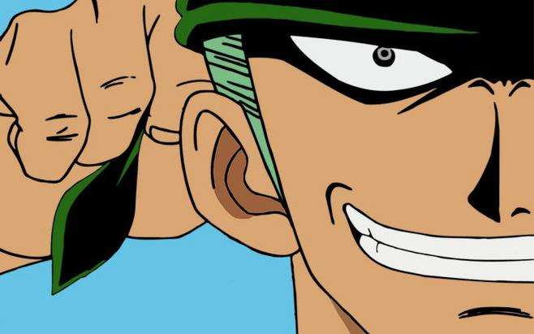
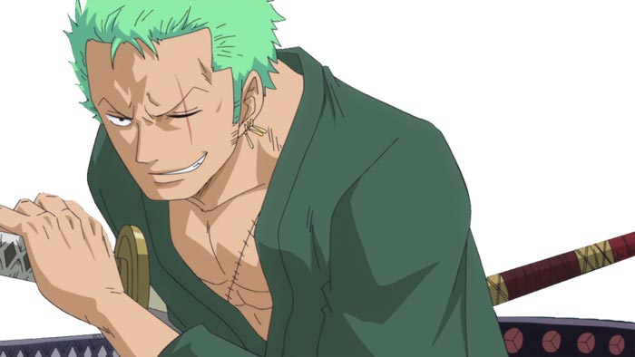
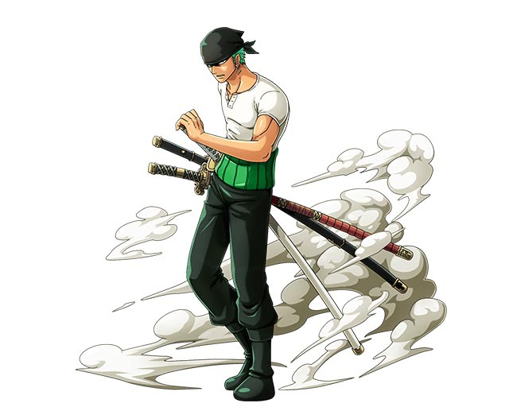

罗罗诺亚·索隆
罗罗诺亚·索隆，是日本漫画《航海王》及其衍生作品中的主要角色。
角色形象
身份背景
- 东海霜月村出身，由道场场主耕四郎亲自传授剑术，因为古伊娜的意外死亡而立志成为世界第一大剑豪，为此而努力修行。之后加入“草帽一伙” ，随着“草帽一伙”以成为世界第一大剑豪的目标旅行。
- 人称“海贼猎人”，“草帽一伙”船员，极恶的世代之一，集结香波地群岛的十一超新星之一。现悬赏金3亿2000万贝里。
相貌衣着
- 两年前：索隆头顶一头绿色短发，左臂绑着深绿色头巾（全力战斗时会把它系在头上），左耳佩戴三只水滴状的金色耳坠，上身穿着白色T恤，腰上裹着绿色腹卷，身着深绿色长裤，脚蹬黑色长靴。腰间挂着三把佩剑。
- 两年后：头顶绿色短发略微留长，左眼上也多了一条伤痕。身穿绿色长袍。腰上围着红色的腰带，腰上依旧裹着绿色腹卷。穿着黑色长靴。
性格特点
- 索隆何时都会尊重身为船长的路飞的意见，会纠正路飞的错误，也有牺牲自己保护路飞的觉悟。
- 和路飞一样喜欢直来直往，认为挡在面前的只需要斩断就行了。
- 两年后即使面对大将藤虎也毫不示弱，可见对修炼后实力的自信。倘若耳闻擅长使剑的高手就在他身边，即便是被夺去影子而陷入重度昏迷状态，也会立刻清醒过来。
- 最大的缺点就是完全没有方向感，非常容易迷路，就算有人带路也会走错方向，连半路痴的路飞都调侃他比动物还不如。
- 常与山治吵架，因为绿色的头发，山治给他取了“绿藻头”的绰号。
- 他的酒量极好，不过索隆声称“真正的剑士绝对不能将自己灌醉”。
- 在面对女性对手的时候，如可让对方看清情势逃走就不加阻拦，反之则在不杀死对方的情况下击败对手。
海贼原则
身为战斗员，他身负着保护同伴乃至整个海贼团的重大责任，因此绝不允许自己或伙伴在关键时刻有任何一丝的“天真”和“软弱”，更不允许有人破坏船上的铁则或者做出有损船长威信的事──当然，在日常生活，团里每一个人都能打成一片，船长路飞一直都是众人吐槽的对象。
悬赏变化
| 悬赏 |
悬赏原因 |
| 6000万 |
阿拉巴斯坦事件，击败沙·克洛克达尔的部下达兹·波尼斯。 |
| 1亿2000万 |
司法岛事件，击败CP9之一的卡库。 |
| 3亿2000万 |
德雷斯罗萨事件，击败唐吉诃德·多弗朗明哥的最高干部琵卡，并与藤虎对刀。 |
索隆帅照


